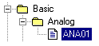
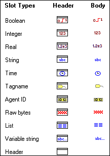

- Select (click on) the required
list of agent types in the left pane, from the
 following options:
following options:- AgentGroup:
This lists EVERY agent type in the Agent Server - only use this if you
cannot find the required agent type in the other categories.
- Advanced:
A list of the more advanced agent types that typically advanced users
will use.
- Basic:
A list of the more common agent types that most users will use.
- System:
A list of agent types that are created by Adroit.
- Select the required type
of agent that you require from this list.
Note: To also
display remote agents on other Agent Servers associated with your project,
then open the View menu and ensure
that the Remote Agents option
is ticked.
- If the required
agent exists, in this agent type, then select it.
Example:
This shows how to locate an Analog agent.

- If the required
agent does not exist, in this agent type then click the Add...
button to create it, as follows:
To save any newly-created agents, open the Options
menu and click the Save Agents Now menu item.
- If necessary, select the
required
for this agent in the right pane.
By default, this browser:
- Selects the most
commonly used slot for each agent type.
- Does not display
the slots from the header of an agent. To display these open the View menu and ensure that the Header slots option is ticked.
- ONLY displays the
slots types than can be used in the specified field. To display ALL the
available slots, open the View
menu and ensure that the Filtered Slot
Types option is not ticked.
The available slot types are indicated by the following icons:
In addition to displaying the relevant slot type, these
icons ALSO indicate whether the slot belongs to the header or the body
of the agent, as follows:

Example:
This shows how a slot will appear in the right pane,
display its slot type icon, its name and a textual description:
- Click the OK
button to insert the selected agent and slot into the required field.

 A fully qualified named value in Adroit (agentName.slotName). using the Select Agent dialog,
A fully qualified named value in Adroit (agentName.slotName). using the Select Agent dialog,